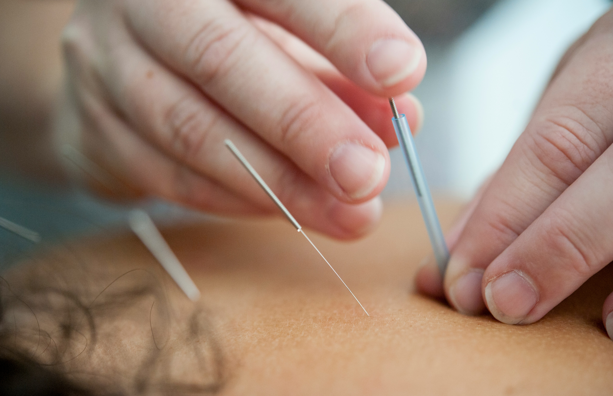
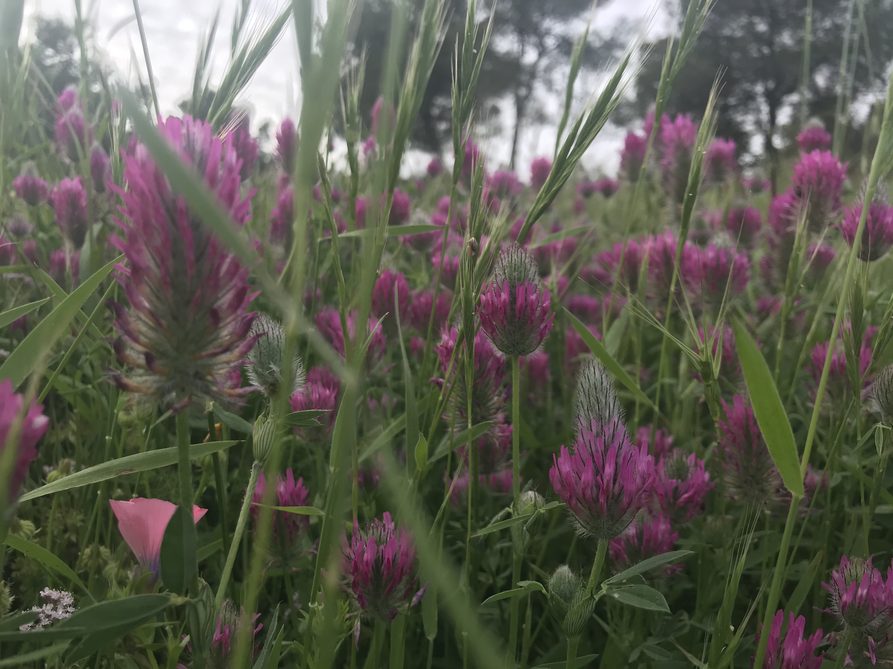

בית אור
← חזרה לאתר
עב
EN
מאמרים
קצת ידע לדרך
מאמרים על רפואה הוליסטית, צמחי מרפא וריפוי הגוף והנפש


וידאו
הרצאות ושיחות
צמחי מרפא ואורח חיים בגיל המעבר
צמחי מרפא מרגיעים ומחזקים - לתקופות מתח מתמשכות